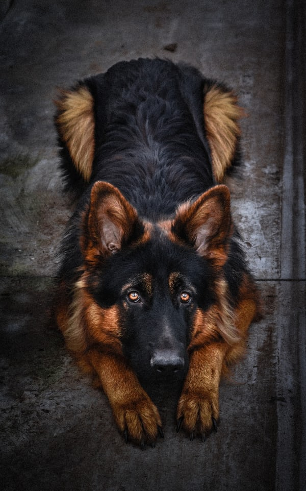

HISTORY
As the name suggests, the German Shepherd originated in Germany in the late 1800s.This
breed was responsible for herding sheep and protecting flocks from predators. They were
not considered pets or companions, but rather servants for farmers. By the beginning of
World War I the German Shepherd was popular throughout Germany and quickly spread to other
parts of the world.
APPEARANCE
German Shepherds have a double coat which is close and dense with a thick.
Most commonly, German Shepherds are either tan/black or red/black. Most
color varieties have black masks and black body markings which can range
from a classic "saddle" to an overall "blanket".

STEPS TO FOLLOW
- Good preparation creates a smoother transition into dog ownership.
Make sure you have a plan in mind for who is going to
care for your pup during the day if you work full time.
- They won’t be able to be left for more than an hour or so at most for a
few weeks, so planning ahead is a big deal.
- Doing things like puppy proofing your house before your dog arrives,
will make it easier during those first days
together.
- Adding baby gates to the doorways, buying a puppy playpen and removing
any access to small objects or cables will all
help.
- Buy a collar, leash, and tags for your new puppy.Your puppy's
tags should include its name, your name, your phone number, and your address.
- Choose a spot that is out of the way, so that the puppy isn’t underfoot.
It’s also important to select an area where
your puppy won’t feel isolated from the rest of the family.
A corner of the living room is a good choice.
LIFESPAN
While some websites claim that German Shepherds have an average
lifespan of 10 to 14 years, the American Kennel Club
(AKC), which registers the breed in the United States, lists their lifespan as only
7 to 10 years.
DISEASES GERMAN SHEPHERD GETS AFFECTED
- Bloat – A condition where the stomach fills with air and twists on its axis,
cutting off the blood supply to the intestines. Fatal in about half of all cases.
- Degenerative myelopathy – A degenerative spinal cord disease with no cure
that eventually leads to paralysis. More common in German Shepherds than other breeds.
- Hip dysplasia – A painful condition where the thighbone doesn’t fit properly in the
hip socket. Often leads to arthritis and mobility issues.
- Hemangiosarcoma – An aggressive form of cancers that affects the cells that
line blood vessels. Common in German Shepherds.
HYGIENE
- Get Regular Vet Care
- Maintain Your German Shepherd’s Weight
- you should start them on a joint supplement that contains glucosamine and
chondroitin when they are young to help prevent and lessen joint pain.
- Give Your German Shepherd Plenty of Exercise
All dogs need exercise to prevent obesity and keep them in shape, but German She
FEEDING TIPS
- Select a quality food with protein level around 24% and fat levels around 14%.
- It shouldn’t contain any corn, animal by-product, or artificial colors, flavors, or
preservatives.
- Meat ,meat and meat ! Meat should be the first ingredient.
- meal can be further down the list.
- Vitamins and minerals should come from real fruits and vegetables rather
than artificial sources.
Feeding too much fatty foods to your dog will be harmful to its health. While on the other
hand, if you feed too less
fat, it will create a lot of skin problems for your German Shepherd.So feed to the needed level.